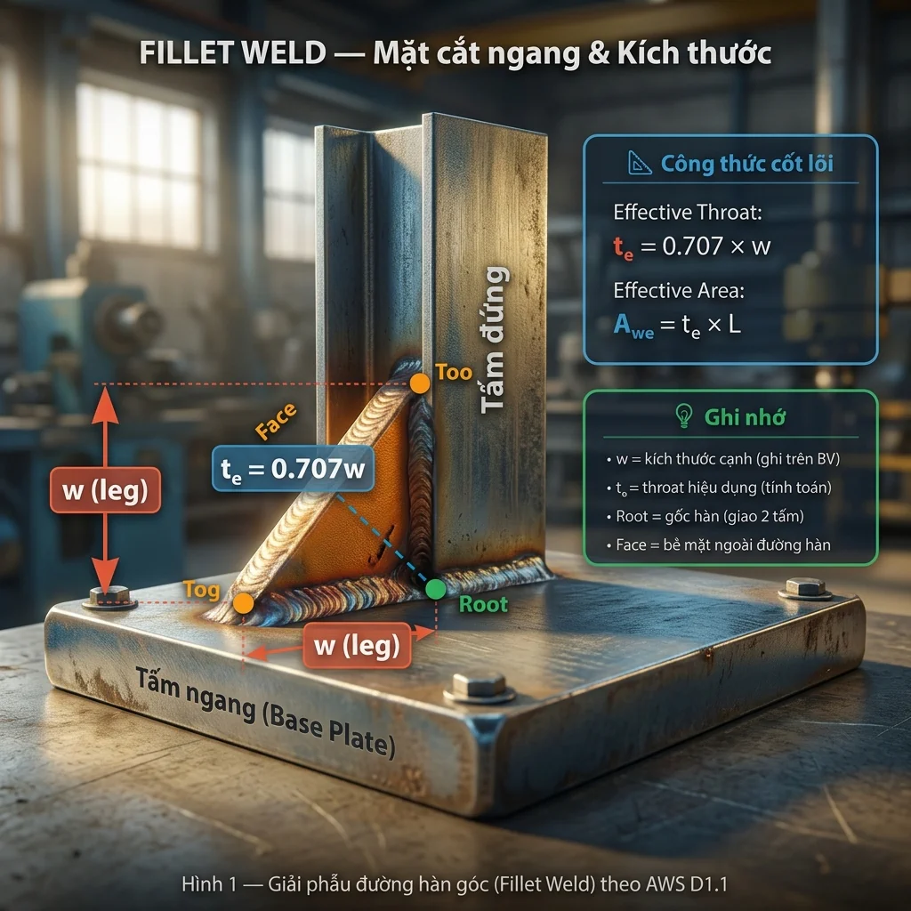
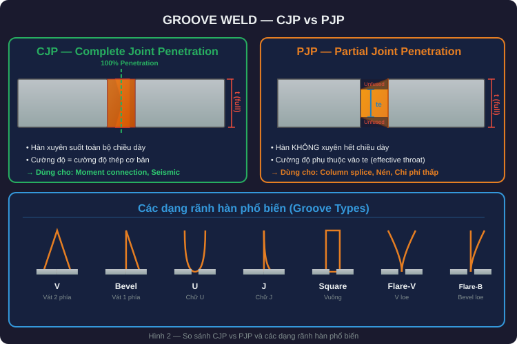
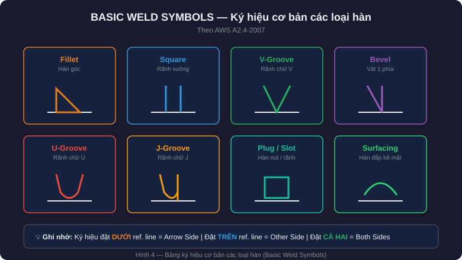
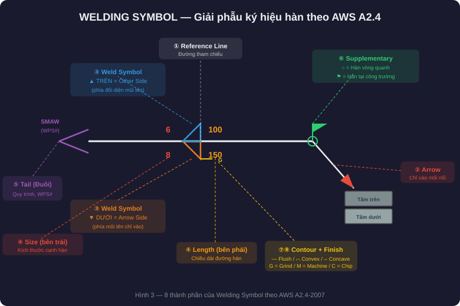
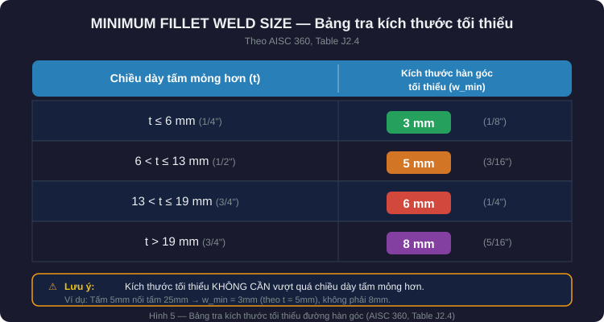

1. Tại sao kỹ sư cần hiểu về đường hàn?
- Đường hàn là mắt xích truyền lực giữa các cấu kiện thép.
- Một mối hàn sai — toàn bộ liên kết có thể mất khả năng chịu lực.
Kỹ sư thiết kế không cần biết hàn, nhưng bắt buộc phải biết: chọn đúng loại đường hàn, ghi đúng ký hiệu trên bản vẽ, xác định đúng kích thước và chiều dài hiệu dụng, và hiểu các giới hạn cho phép của tiêu chuẩn.
2. Phân loại các loại đường hàn
2.1 Đường hàn góc (Fillet Weld) — phổ biến nhất
- Tiết diện tam giác, nối hai bề mặt vuông góc hoặc gần vuông góc.
- Ứng dụng: mối nối chữ T, mối nối chồng (lap joint), mối nối góc.
- Ưu điểm: dễ thi công, không cần vát mép, chi phí thấp.
- Nhược điểm: khả năng chịu lực phụ thuộc vào chiều cao throat hiệu dụng.
Chiều cao throat hiệu dụng te = 0.707 × kích thước cạnh hàn (w)
Diện tích hiệu dụng Awe = te × chiều dài hiệu dụng (L)
2.2 Đường hàn rãnh (Groove Weld)
Nối hai cấu kiện trong cùng mặt phẳng (butt joint), yêu cầu vát mép.
- CJP — hàn ngấu hoàn toàn: kim loại hàn xuyên suốt toàn bộ chiều dày. Dùng cho liên kết moment, nối cột, kết cấu chịu động đất. Cường độ thiết kế = cường độ kim loại cơ bản → không cần kiểm tra đường hàn riêng nếu dùng que hàn phù hợp.
- PJP — hàn ngấu một phần: kim loại hàn không xuyên hết chiều dày. Chiều sâu hiệu dụng phụ thuộc góc vát, quy trình và vị trí hàn. Dùng cho liên kết chịu nén, liên kết không cần phát triển toàn bộ cường độ.
| Ký hiệu | Dạng rãnh | Ghi chú |
|---|---|---|
| V | Chữ V | Vát 2 phía, phổ biến nhất |
| Bevel | Vát 1 phía | Một tấm vát, tấm kia thẳng |
| U | Chữ U | Giảm lượng kim loại hàn cho tấm dày |
| J | Chữ J | Tương tự U nhưng 1 phía |
| Square | Vuông | Không vát, dùng cho tấm mỏng |
| Flare-V | V loe | Cho tiết diện tròn/cong |
| Flare-Bevel | Bevel loe | Cho 1 mặt cong + 1 mặt phẳng |

2.3 Hàn nút (Plug) và hàn rãnh dài (Slot)
- Plug weld: hàn qua lỗ tròn trên tấm phủ, nối với tấm bên dưới.
- Slot weld: tương tự nhưng lỗ hình chữ nhật.
- Mục đích chính là truyền lực cắt, chống tách lớp — không dùng để chịu kéo trực tiếp.
3. Ký hiệu đường hàn theo AWS A2.4
| Thuật ngữ | Ý nghĩa |
|---|---|
| Weld Symbol | Biểu tượng nhỏ thể hiện loại hàn (tam giác = fillet, chữ V = groove…) |
| Welding Symbol | Toàn bộ ký hiệu: đường tham chiếu, mũi tên, biểu tượng hàn, kích thước, đuôi, ký hiệu bổ sung |

Tám thành phần của một Welding Symbol
- Reference Line — nền tảng, mọi thông tin đặt trên hoặc dưới đường này.
- Arrow — chỉ đến vị trí mối nối cần hàn.
- Weld Symbol — biểu tượng loại hàn.
- Dimensions — bên trái là kích thước, bên phải là chiều dài và bước hàn.
- Tail — ghi quy trình hàn (SMAW, GMAW…) hoặc số WPS.
- Supplementary Symbols — ký hiệu biên dạng và hoàn thiện.
- Finish Symbol — G = mài, M = gia công cơ, C = đục.
- Contour Symbol — phẳng (flush), lồi (convex), lõm (concave).

Quy tắc Arrow Side / Other Side
- Arrow Side — phía mũi tên chỉ vào → ký hiệu đặt DƯỚI đường tham chiếu.
- Other Side — phía đối diện mũi tên → ký hiệu đặt TRÊN đường tham chiếu.
- Both Sides — ký hiệu đặt cả trên và dưới.
| Ký hiệu | Tên gọi | Ý nghĩa |
|---|---|---|
| ○ trên giao điểm | Weld-All-Around | Hàn vòng quanh toàn bộ chu vi |
| ⚑ (cờ) | Field Weld | Hàn tại công trường, không phải tại xưởng |
| ▬ (chữ nhật) | Backing | Dùng tấm lót phía sau mối hàn |
| ◑ (bán nguyệt đen) | Melt-Through | Yêu cầu hàn ngấu xuyên, nhìn thấy phía sau |
| ─── (gạch ngang) | Spacer | Miếng đệm giữa hai tấm |
4. Yêu cầu kích thước theo AISC 360 & AWS D1.1
Kích thước tối thiểu đường hàn góc
Theo AISC 360, Bảng J2.4 — tra theo chiều dày tấm mỏng hơn:
| Chiều dày tấm mỏng hơn (t) | Kích thước hàn góc tối thiểu |
|---|---|
| t ≤ 6 mm (1/4") | 3 mm (1/8") |
| 6 < t ≤ 13 mm (1/2") | 5 mm (3/16") |
| 13 < t ≤ 19 mm (3/4") | 6 mm (1/4") |
| t > 19 mm (3/4") | 8 mm (5/16") |

Kích thước tối đa và chiều dài hiệu dụng
- Kích thước tối đa: tấm < 6 mm → bằng chiều dày tấm; tấm ≥ 6 mm → chiều dày tấm trừ 2 mm. Lý do: tránh nung chảy và khía mép tấm thép.
- Chiều dài tối thiểu: ≥ 4 lần kích thước cạnh hàn (4w) và không nhỏ hơn 38 mm.
- Hàn gián đoạn: mỗi đoạn ≥ 4w, bước hàn phải ghi rõ trên bản vẽ.
- Hàn quay đầu (return/boxing): bắt buộc cho mối nối chồng chịu kéo — quấn quanh đầu tấm ≥ 2w.
Throat hiệu dụng của đường hàn rãnh PJP
Chiều sâu hiệu dụng của PJP phụ thuộc vào góc vát rãnh, quy trình hàn và vị trí hàn.
| Góc vát rãnh (θ) | Effective throat |
|---|---|
| θ ≥ 60° | Bằng chiều sâu rãnh (D) |
| 45° ≤ θ < 60° (SMAW/GMAW) | D − 3 mm (1/8") |
| θ < 45° | Phải qualification bằng PQR |
5. Chọn nhanh loại đường hàn
| Tình huống thiết kế | Loại hàn đề xuất |
|---|---|
| Dầm – cột (liên kết moment) | CJP groove ở cánh, fillet ở bụng |
| Bản mã (gusset plate) – dầm/cột | Fillet weld |
| Nối cột — chịu nén | PJP groove weld |
| Nối cột — vùng động đất | CJP groove weld |
| Sườn gia cường (stiffener) | Fillet weld |
| Bản đế cột (base plate) | Fillet weld hoặc PJP |
| Liên kết ống HSS | CJP hoặc PJP tùy tải trọng |
| Chống tách lớp tấm chồng | Plug hoặc slot weld |
Checklist trước khi phát hành bản vẽ
- Đã ghi loại đường hàn (fillet / groove / plug)?
- Đã ghi kích thước (leg size hoặc groove depth)?
- Đã ghi chiều dài — liên tục hay gián đoạn?
- Ký hiệu đặt đúng Arrow Side / Other Side?
- Kích thước hàn ≥ giá trị tối thiểu và ≤ giá trị tối đa?
- Đã chỉ định CJP hay PJP cho groove weld?
- Đã phân biệt hàn xưởng / hàn công trường?
- Tail có ghi chú WPS hoặc quy trình đặc biệt?
- Đã review với nhóm chế tạo / lắp dựng trước khi phát hành?
Tóm tắt Phần 1
| Nội dung | Từ khoá |
|---|---|
| Fillet weld phổ biến nhất, throat = 0.707 × cạnh hàn | te = 0.707w |
| CJP phát triển toàn bộ cường độ, PJP chỉ một phần | CJP vs PJP |
| Dưới đường tham chiếu là Arrow Side, trên là Other Side | Arrow / Other |
| Kích thước tối thiểu tra theo tấm mỏng hơn (Table J2.4) | Min Size |
| Kích thước tối đa = chiều dày − 2 mm (tấm ≥ 6 mm) | Max Size |
| Chiều dài tối thiểu ≥ 4w và ≥ 38 mm | Min Length |
| Phân biệt Weld Symbol ≠ Welding Symbol | Symbol ≠ Full Symbol |
| Luôn chạy checklist trước khi phát hành bản vẽ | QA / QC |
Bài viết thuộc series "Hướng dẫn thiết kế kết cấu Công trình Công nghiệp" — Roberto Structural. Nội dung mang tính hướng dẫn kỹ thuật; kỹ sư chịu trách nhiệm kiểm tra và hiệu chỉnh theo điều kiện cụ thể của từng dự án và yêu cầu của tiêu chuẩn áp dụng. Tiêu chuẩn thay đổi theo thời gian — luôn kiểm tra phiên bản mới nhất của AWS D1.1, AISC 360 và AWS A2.4 trước khi áp dụng.